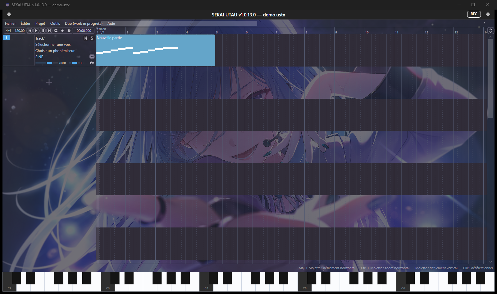
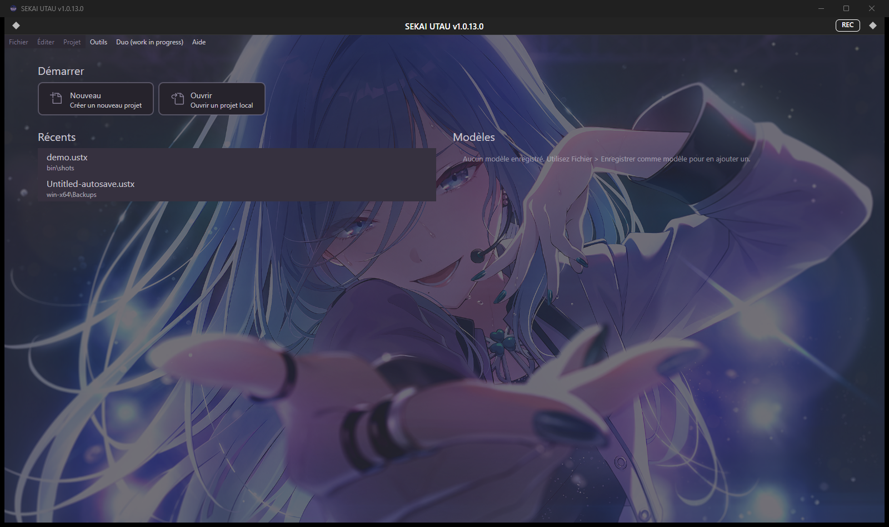
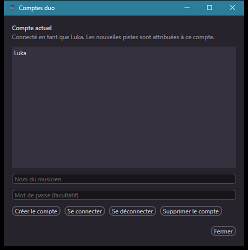

Éditeur de chant · Windows, Linux, macOS
Un éditeur de chant qui parle français.
SEKAI UTAU reprend OpenUtau (MIT) et le pousse côté français : les 1056 chaînes d'interface sont traduites, les messages d'erreur des banques aussi. On écrit les notes, on règle les phonèmes, on rend en WAV.

- Rendu WAV par piste ou mixage
- Projets USTX, UST, MIDI, VSQ, SVP, CCS, MusicXML
- Voix UTAU, DiffSinger, Enunu
- Licence MIT, dérivé d'OpenUtau
Ce qu'on fait dans l'application
Écrire
Piano roll, paroles note par note, vibrato et portamento réglables, phonèmes modifiables un par un. Les expressions (DYN, PITD, CLR, VEL, ATK, DEC, GEN, BRE) se dessinent à la souris, avec aperçu pendant la lecture.
Faire chanter
UTAU classique, DiffSinger et Enunu. Le phonémiseur se choisit par piste ; quand la banque ne gère pas la langue demandée, l'application retombe sur le phonémiseur japonais au lieu d'échouer silencieusement.
Rendre
WAV par piste, mixage complet, export UST et MIDI, scripts DiffSinger pour les curieux. Cache de rendu et lecture en boucle pour ne pas attendre entre deux essais.
Reprendre un projet
L'import accepte USTX, UST, MIDI, VSQ/VSQX, SVP, CCS, MusicXML et MXL. Les parties audio suivent, et les anciens fichiers gardent leurs réglages de piste.

Banques de voix : ce qui marche, ce qui ne marchera pas
Trois familles se chargent directement. Deux familles du commerce sont fermées — autant le dire sur le site plutôt que de laisser l'utilisateur chercher pourquoi.
| Banque | État | Détail |
|---|---|---|
| UTAU | Chargée | Dossier + oto.ini et character.txt. Un dossier posé dans Singers apparaît au redémarrage. |
| DiffSinger | Chargée | Dictionnaires dsdict-*.yaml multilingues, phonémiseur propre à la banque, repli japonais si besoin. |
| Enunu | Chargée | Modèles ONNX et tables de phonèmes, comme dans OpenUtau. |
| VOCALOID | Détectée, non lisible | Données .ddb, .vvd, .vvb chiffrées par l'éditeur. L'app le signale avec le nom du dossier. |
| CeVIO AI / VoiSona | Détectée, non lisible | Bibliothèques sous licence Techno-Speech, sans format externe. Le message indique la sortie WAV + MIDI. |
Deux personnes, un morceau work in progress
Un menu Duo ouvre des comptes locaux : pseudo, mot de passe facultatif haché en PBKDF2-SHA256, et chaque piste retient son auteur. L'échange se fait par fichier — pas de serveur, rien qui sorte du disque.
- Chacun se connecte à son compte.
- Duo > Exporter ma contribution écrit un
.ustxavec vos seules pistes. - Duo > Importer une contribution ajoute celles du partenaire à son projet.
Le temps réel n'existe pas encore : d'où le badge work in progress dans le menu et dans la fenêtre de comptes. Ce qui marche aujourd'hui, c'est l'échange de fichiers.

Versions récentes
-
1.0.13 12 novembre 2026
Le menu devient « Duo (work in progress) » et la fenêtre de comptes affiche un avertissement : comptes locaux, contributions par fichier
.ustx. -
1.0.12 12 novembre 2026
Comptes locaux, pistes attribuées à leur auteur, export d'une contribution et import chez le partenaire, avec la mention des risques de doublon.
-
1.0.11 12 novembre 2026
Détection des bibliothèques CeVIO AI et VoiSona dans le dossier des chanteurs, avec la méthode WAV + MIDI dans le message.
-
1.0.10 12 novembre 2026
Traduction complète de l'interface : 333 derniers textes, boutons, dialogues, préférences, gestionnaire de paquets et erreurs de banques.
Télécharger
Archives autonomes, rien à compiler. Version 1.0.13.
| Système | Fichier | Taille | |
|---|---|---|---|
| Windows 64 bits | SEKAI-UTAU-win-x64.zip |
143 Mo | Télécharger |
| Linux x86_64 | SEKAI-UTAU-linux-x64.tar.gz |
130 Mo | Télécharger |
| macOS Apple Silicon | SEKAI-UTAU-osx-arm64.zip |
123 Mo | Télécharger |
Windows
Dézipper, lancer SekaiUtau.exe. SmartScreen : « Informations complémentaires » puis « Exécuter quand même ».
Linux
tar -xzf SEKAI-UTAU-linux-x64.tar.gz, puis chmod +x SEKAI-UTAU/SekaiUtau et lancer le binaire.
macOS
Non signé par Apple : xattr -dr com.apple.quarantine "SEKAI UTAU.app" puis codesign --force --deep -s - "SEKAI UTAU.app". Binaires arm64 uniquement.
Vérifier une archive
Empreintes SHA-256 dans SHA256SUMS.txt.
Questions posées
Faut-il acheter une voix pour commencer ?
Non. Les banques UTAU libres et les modèles DiffSinger suffisent. L'app en détecte automatiquement dans son dossier Singers.
Mes banques VOCALOID ou CeVIO AI n'apparaissent pas, c'est un bug ?
Non : leurs données sont chiffrées et sous licence, sans format de banque lisible par un tiers. L'app les repère et affiche la marche à suivre (export WAV + MIDI depuis le logiciel d'origine).
Le mode duo marche-t-il entre deux ordinateurs ?
Oui, par fichier .ustx. Pas de synchronisation automatique, pas de serveur : c'est la partie encore en développement.